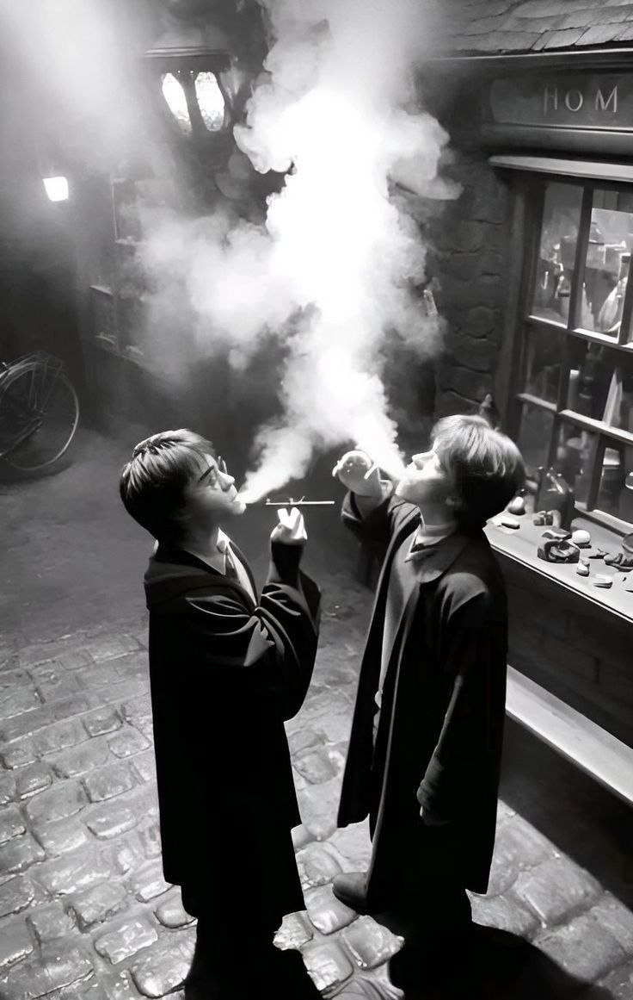

Harry Potter is a series of seven fantasy novels written by British author J. K. Rowling. The novels chronicle the lives of a young wizard, Harry Potter, and his friends, Hermione Granger and Ron Weasley, all of whom are students at Hogwarts School of Witchcraft and Wizardry. The main story arc concerns Harry's conflict with Lord Voldemort, a dark wizard who intends to become immortal, overthrow the wizard governing body known as the Ministry of Magic, and subjugate all wizards and Muggles


Joanne Rowling CH OBE FRSL, known by her pen name J. K. Rowling, is a British author and philanthropist. She is the author of Harry Potter, a seven-volume fantasy novel series published from 1997 to 2007. The series has sold over 600 million copies, been translated into 84 languages, and spawned a global media franchise including films and video games. The Casual Vacancy (2012) was her first novel for adults. She writes Cormoran Strike, an ongoing crime fiction series, under the alias Robert Galbraith.


.jpg)
The Hogwarts kitchens was a room located in Hogwarts School of Witchcraft and Wizardry. It was where all the food for Hogwarts students and staff was prepared. House-elves inhabited this room and were responsible for preparing meals.
.jpg)
.jpg)
Lord Voldemort is a character and the main antagonist in J. K. Rowling's series of Harry Potter novels. The character first appeared in Harry Potter and the Philosopher's Stone, which was published in 1997, and returned either in person or in flashbacks in each book and its film adaptation in the series except the third, Harry Potter and the Prisoner of Azkaban, in which he is only mentioned.
Voldemort, an anagrammatic sobriquet for Tom Marvolo Riddle, is the archenemy of Harry Potter, who according to a prophecy has "the power to vanquish the Dark Lord". He attempts to murder the boy, but instead kills his parents, Lily and James Potter, and leaves Harry with a scar on his forehead in the shape of a lightning bolt. Nearly every witch or wizard dares not utter his name and refers to him instead with such monikers as "You-Know-Who", "He-Who-Must-Not-Be-Named", or "The Dark Lord". Voldemort's obsession with blood purity signifies his aim to rid the wizarding world of Muggle (non-magical) heritage and to conquer both worlds, Muggle and wizarding, to achieve pure-blood dominance. Through his mother's family, he is the last descendant of the wizard Salazar Slytherin,[6][7] one of the four founders of Hogwarts School of Witchcraft and Wizardry. He is the leader of the Death Eaters, a group of wizards and witches dedicated to ridding the Wizarding World of Muggles and establishing Voldemort as its supreme ruler.